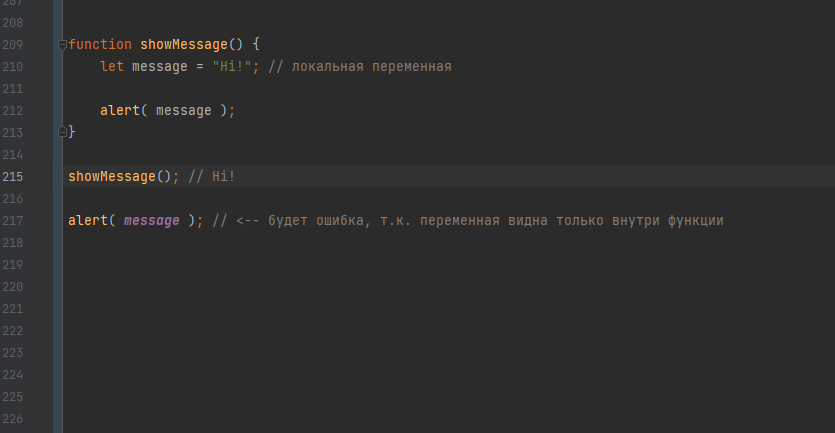
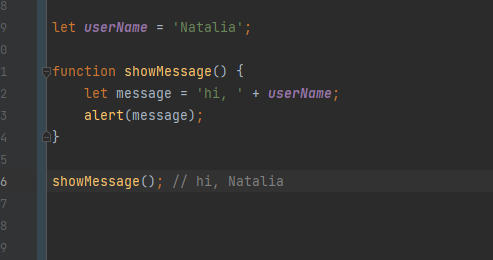
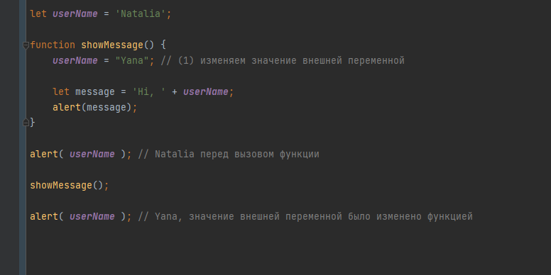
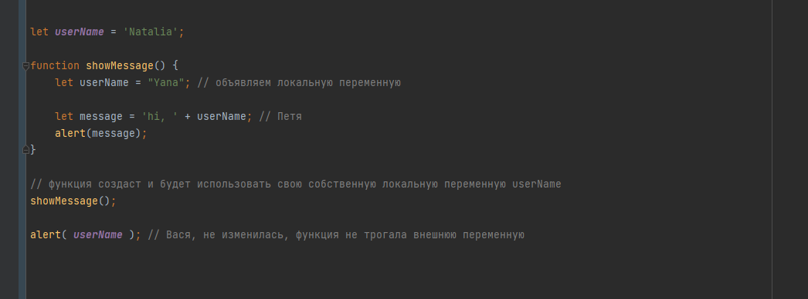
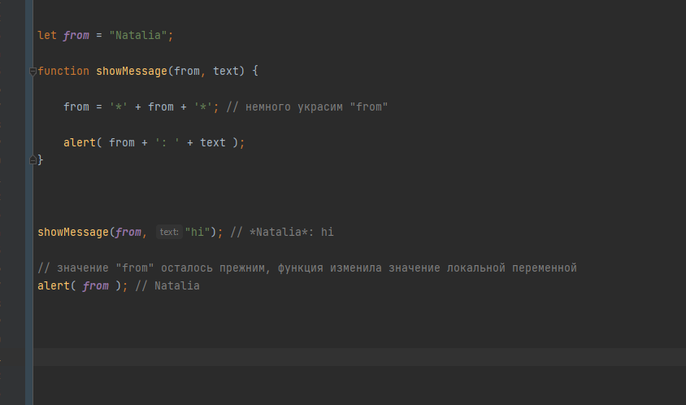
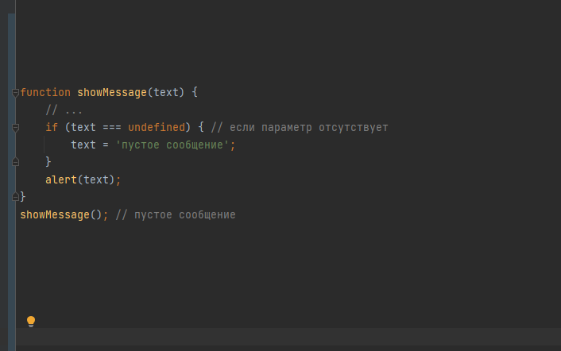
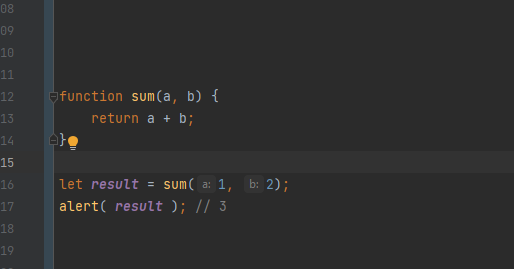
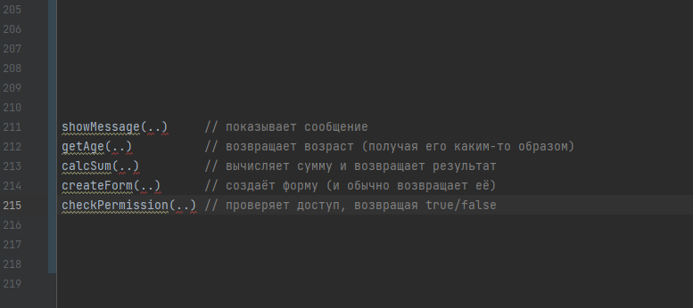

это блок кода, предназначенный для выполнения определенной задачи.
JavaScript функция определяется с помощью ключевого кода function, за которым следует имя и скобки ().
Имена функций могут содержать буквы, цифры, подчеркивания и знаки доллара (те же правила, что и для переменных).
Переменные, объявленные внутри функции, видны только внутри этой функции.
У функции есть доступ к внешним переменным, например:
Функция обладает полным доступом к внешним переменным и может изменять их значение.
Внешняя переменная используется, только если внутри функции нет такой локальной.

Переменные, объявленные снаружи всех функций – называются глобальными.
Глобальные переменные видимы для любой функции (если только их не перекрывают одноимённые локальные переменные).
Мы можем передать внутрь функции любую информацию, используя параметры.
Параметры функции - это имена, перечисленные в определении функции.
Аргумент – это значение, которое передаётся функции при её вызове.

Если при вызове функции аргумент не был указан, то его значением становится undefined.
Значение по умолчанию для параметра функции cube, задали используя оператор равенства (=)
Во время выполнения функции мы можем проверить, передан ли параметр, сравнив его с undefined:
Функция может вернуть результат, который будет передан в вызвавший её код.
Функция – это действие. Поэтому имя функции обычно является глаголом. Оно должно быть кратким, точным и описывать действие функции, чтобы программист, который будет читать код, получил верное представление о том, что делает функция
